Who am I?
Here's a bit about me and the background behind this website!
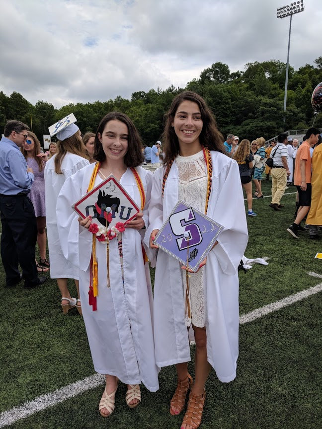
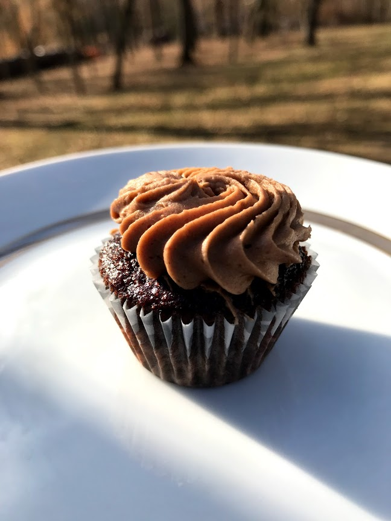
Name: Ali
How old am I? 18 (as of 8/2018)
where am I from? New Jersey, USA
What are your hobbies? I love baking (I made that cupcake above!) and I also play the piano!
Are you going to College? Yes! I am going to Carnegie Mellon University to study Electrical and Computer Engineering! At college, I am definitely joining several clubs: Society of Women Engineers (SWE), Women in Electrical and Computer Engineering (WinECE), and Fringe. Fringe is a booth and buggy organization on campus.** I'm excited to work with my community to encourage girls to pursue STEM and to investigate it.
**What is booth and buggy? At CMU we make small, carbon fiber tubes which are unpowered vehicles. Here's a picture so you can visualize it!
 We also make two story structures which are up to Pittsburgh's building standards. These structures are put together within a week's time!
We also make two story structures which are up to Pittsburgh's building standards. These structures are put together within a week's time!
 What is the purpose of this website? The purpose of this website is to create a resource for girls to better navigate STEM. I noticed when I was first beginning high school and first becoming interested in STEM, there were hundreds (maybe thousands) of websites about STEM, but they all talked about different informaation. None of the websites seemed to have a little bit of everything combined into one website. This is what I have attempted to create here. This website is supposed to be a resource for girls in STEM.
Is this website related to anything you are working on? Actually, yes. This website is my way of concluding my Gold Award. A Gold Award is the highest award a Girl Scout can earn. When I began my Gold Award in sophomore year of high school, I decided to work on spreading STEM to girls because I noticed that there were issues with an underrepresentation of women in STEM. Here's a little about my Gold Award and some pictures!
What is the purpose of this website? The purpose of this website is to create a resource for girls to better navigate STEM. I noticed when I was first beginning high school and first becoming interested in STEM, there were hundreds (maybe thousands) of websites about STEM, but they all talked about different informaation. None of the websites seemed to have a little bit of everything combined into one website. This is what I have attempted to create here. This website is supposed to be a resource for girls in STEM.
Is this website related to anything you are working on? Actually, yes. This website is my way of concluding my Gold Award. A Gold Award is the highest award a Girl Scout can earn. When I began my Gold Award in sophomore year of high school, I decided to work on spreading STEM to girls because I noticed that there were issues with an underrepresentation of women in STEM. Here's a little about my Gold Award and some pictures!
First, while I was working on setting up my plans, I encountered numerous issues. As a result, I was flexible and made sure to modify my plan to maximize my influence. For the first part, I presented a STEM poster with STEM items at my high school's eighth grade orientation. Here's the board:
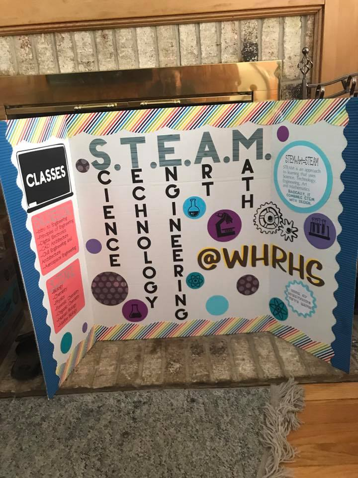
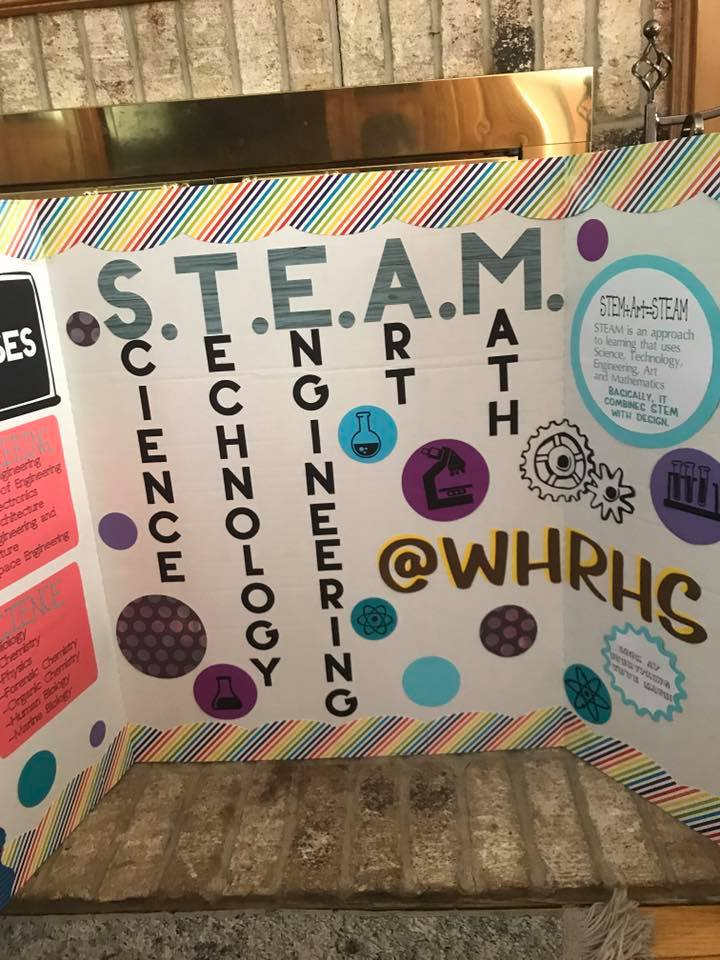
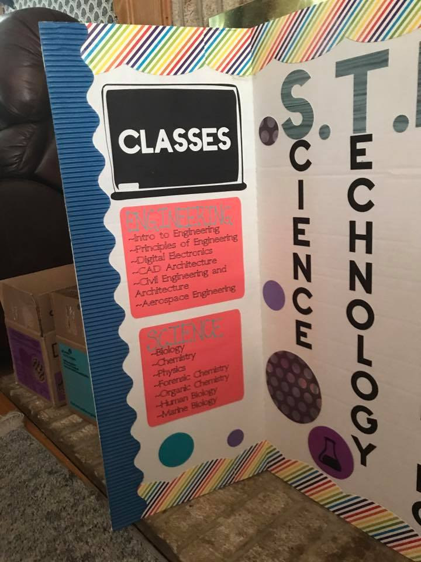
Here are some pictures of me while at the orienation:
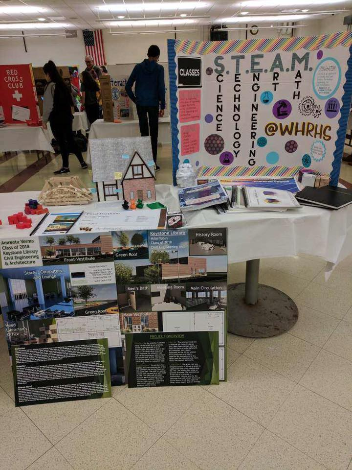
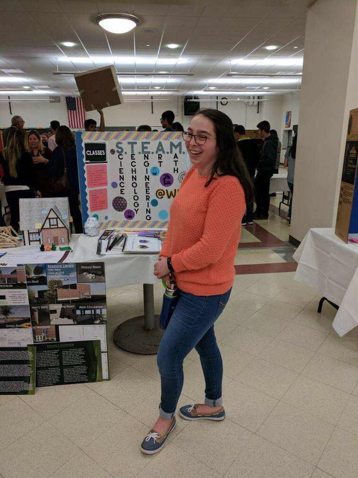
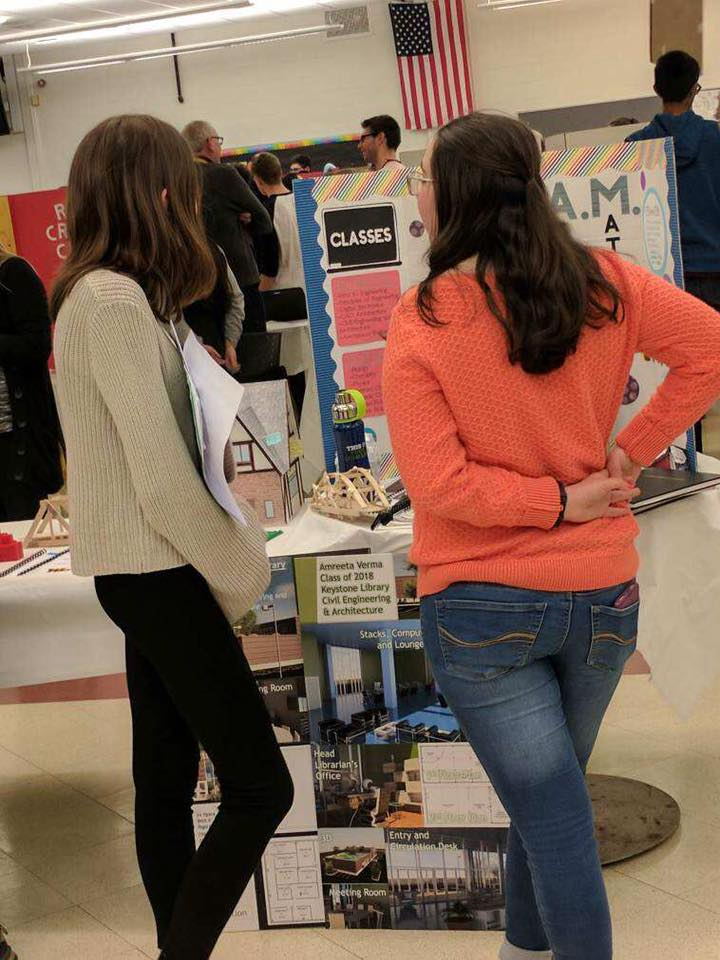
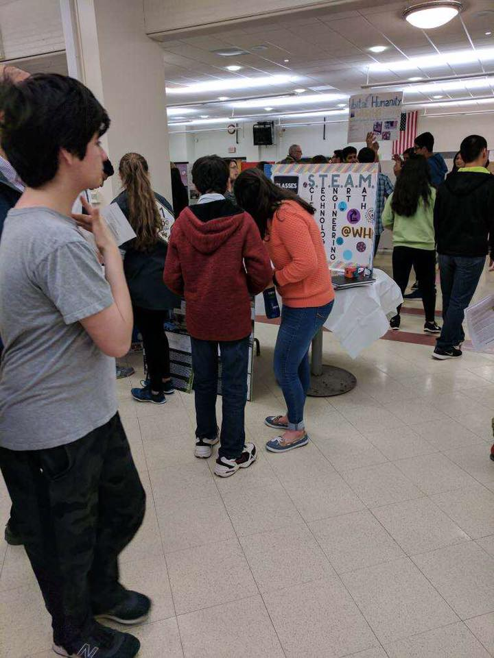
This was during my junior year. It took a year for me to figure out how I was going to juggle all of my obstacles and my school work, but I did it! I wanted to have another display this year during the orientation, but I had scheduling conflicts and could not. However, I have donated the poster to the engineering department who will display this poster and show it during future eighth grade orientations.
Moving forwards! After I pulled this together, it was time for me to tackle my next challenge--informing the remainder of my school about STEM. This was probably one of the more difficult parts because high schoolers tend to be stubborn. You can't get students to sit through a presentation or to answer surveys. So, as I was speaking to one of my previous engineering teachers, he mentioned that the engineering department had these two bulletin boards which they never really used. They were on the sides of a main entrance way into my high school, so I decided to design a bulletin board for one of the boards. The other board is supposed to have images describing the STEM courses at my high school, but I decided to let my teachers work on that one.
I designed the bulletin board using a computer program and it was printed using my school's large scale printer and then they laminated it. This is what it looked like before it was even printed:
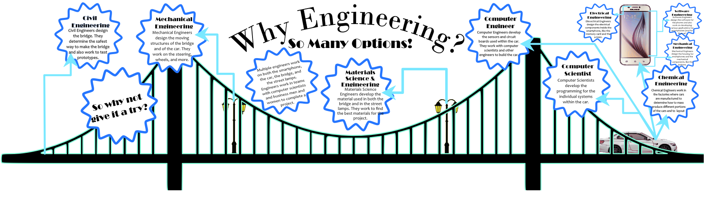
After I designed it, it was printed and I cut it out using an exacto knife (yes, this did take a very long time). I returned it to school to have it laminated, and I was surprised to find out that the group that laminated it also cut it out! Here's a picture of me with the bulletin board after I put it up:
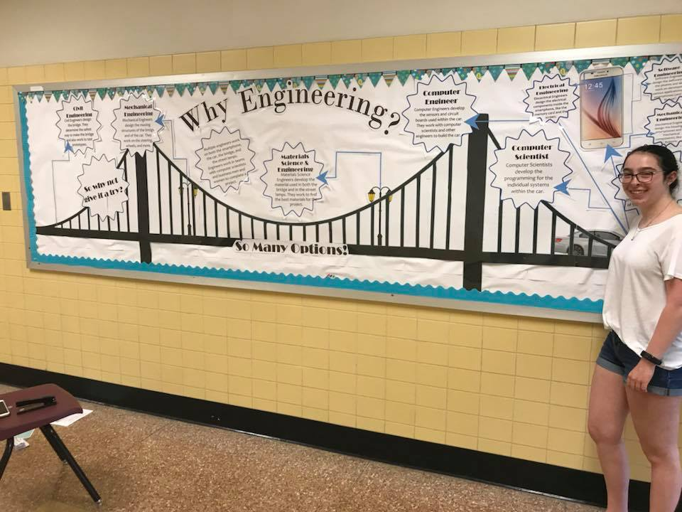
In the meantime, starting in September, I started meeting with my first advisor from #BuiltByGirls where I was encouraged to make this website. Originally, I knew I wanted to make a website, but I definitely was not planning on making it from scratch. After going through several codecademy courses on HTML and CSS (The programming languages used to make this website) and figuring out bootstrap (A HTML resource library for making websites with reactive design), I managed to create this website over the past 11 months. I'm looking forward to finding ways to expand this website especially as I go through college and find more opportunities to become involved in STEM!